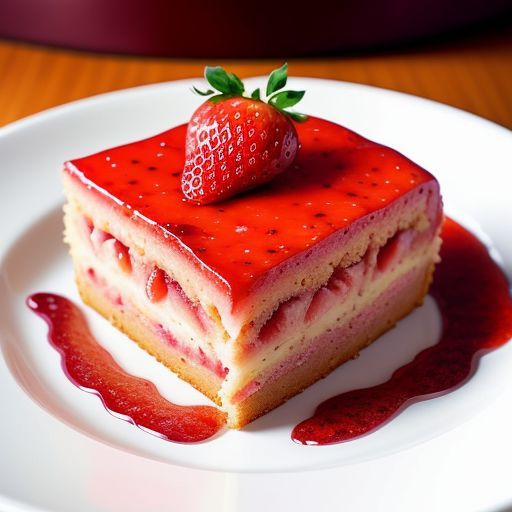

Berrylicious Strawberrycake

Description
Delight in the sweet essence of summer with our luscious strawberry cake. Each bite bursts with the vibrant flavor of ripe strawberries, nestled within layers of moist, tender cake. Finished with a fluffy cloud of whipped cream frosting and crowned with fresh strawberries, it's a delectable celebration of nature's finest bounty. Taste the freshness in every slice of this irresistible treat.
Ingredients
- 2 3/4 cups cake flour
- 2 1/2 teaspoons baking powder
- 2 cups white sugar
- 1 cup butter, softened
- 1 package strawberry flavored Jell-O
- 4 eggs
- 1 cup milk
- 1 teaspoon vanilla extract
- 1/2 cup strawberries, pureed
- 4 ounces cream cheese
- 4 ounces white chocolate baking squares
- 3 tablespoons heavy whipping cream
- 4 cups confectioners' sugar
Steps
- Preheat the oven to 350 degrees F
- Prepare two 9-inch round cake pans by greasing them and lining them with waxed paper.
- In a bowl, combine flour and baking powder.
- In a separate bowl, beat together white sugar, butter, and gelatin until fluffy. Add eggs one at a time, beating well after each addition.
- Alternate stirring in the flour mixture and milk into the sugar mixture until a smooth batter forms. Stir in vanilla extract and strawberries until well combined.
- Divide the batter evenly between the prepared cake pans.
- Bake in the preheated oven for 25 to 30 minutes, or until a toothpick inserted into the center of both cakes comes out clean. Allow the cakes to cool completely.
- In a saucepan over medium heat, stir together cream cheese, white chocolate, and heavy whipping cream until the white chocolate is melted and the mixture is well combined, about 5 minutes.
- Stir confectioners' sugar into the cream cheese mixture until a smooth frosting forms. Allow the frosting to cool and set.
- Spread a layer of frosting over the top of one cake, then place the second cake on top of the frosting layer. Frost the top of the second cake and the sides of both cakes with the remaining frosting.